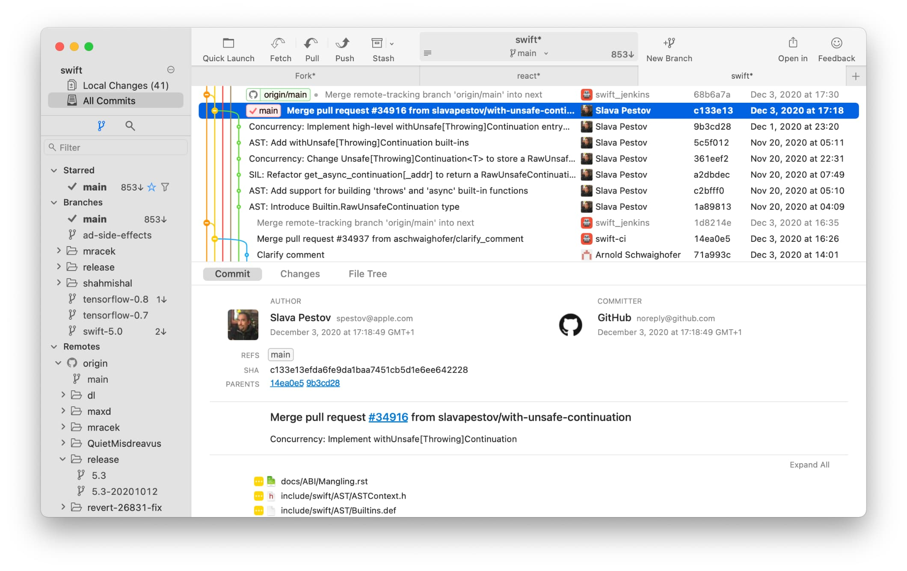
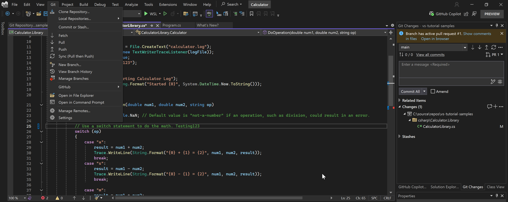

Primary Value
Visual Branch And History Context
Teams can inspect commit graphs and branch relationships faster than reading raw CLI output.
Developer Productivity Guide
SourceTree, TortoiseGit, GitHub Desktop, Tower, Visual Studio, VS Code, IntelliJ IDEA, SmartGit, and Fork provide different Git experience levels. Use this section to match tool choice with team skill, platform constraints, and your PR-driven DevOps model.
How to use this page: choose one or two GUI clients, validate fit with your branching strategy, then standardize docs and onboarding around them.
GUI tools do not replace Git fundamentals. They reduce friction for day-to-day branch, commit, diff, and merge operations.
Primary Value
Teams can inspect commit graphs and branch relationships faster than reading raw CLI output.
Governance Fit
GUI clients complement branch protection and PR approvals in your Git host and FlexDeploy release controls.
Each page includes docs links, screenshot, and practical usage guidance.

Atlassian desktop Git GUI with strong visual branch and commit tooling.
Open SourceTree guide
Simple desktop client focused on branch changes, commits, and pull request handoff.
Open GitHub Desktop guide
Windows shell-integrated Git workflow with context menu operations.
Open TortoiseGit guide
Commercial desktop Git client for power users and teams needing rich visual controls.
Open Tower guide
Cross-platform Git GUI with enterprise-friendly workflows and advanced repository tooling.
Open SmartGit guide
Fast commercial Git client with free evaluation and polished branch/commit UX.
Open Fork guide
Full IDE with built-in Git and pull request support for .NET and enterprise development.
Open Visual Studio guide
Lightweight editor with integrated Source Control and extension-based Git workflows.
Open VS Code guide
JetBrains IDE with deep refactoring and built-in Git workflows for JVM and polyglot teams.
Open IntelliJ IDEA guideUse this matrix to shortlist default tooling and set expectations on licensing cost.
| Tool | Category | Best platform fit | Free offering | Price (USD, March 2026) | Best usage model |
|---|---|---|---|---|---|
| SourceTree | Git client | Windows and macOS teams | Yes | $0 | Mixed-skill teams needing visual Git operations |
| TortoiseGit | Git client | Windows-centric teams | Yes (open source) | $0 | Explorer-based enterprise workflows |
| GitHub Desktop | Git client | Windows and macOS teams | Yes (open source) | $0 | Low-friction PR workflows, especially on GitHub |
| Tower | Git client | Windows and macOS power users | No (30-day trial) | Basic: $69/user/year, Pro: $99/user/year | Advanced Git users and release engineers |
| SmartGit | Git client | Windows, macOS, Linux teams | Yes for non-commercial use | Commercial pricing varies by license type and options | Enterprise teams needing cross-platform consistency |
| Fork | Git client | Windows and macOS teams | Free evaluation | $59.99 one-time per user | Teams wanting fast UI with low recurring cost |
| Visual Studio (IDE) | IDE with Git | Windows enterprise development | Community edition | Community: $0, Pro monthly: $45/user/mo, Enterprise monthly: $250/user/mo | Full IDE + Git workflow in one toolchain |
| Visual Studio Code (IDE) | Editor/IDE with Git | Windows, macOS, Linux teams | Yes (open source editor) | $0 | Code-first teams using extensions and terminal workflows |
| IntelliJ IDEA | IDE with Git | Windows, macOS, Linux teams | Yes (free core functionality) | Ultimate: Personal $199/year ($19.90/mo) or Commercial $719/year ($71.90/mo) | Java/Kotlin and polyglot teams needing deep IDE + Git integration |
Pricing and licensing can change. Validate with each vendor before procurement.